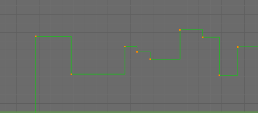

Вступ¶
After animating some property in Blender using keyframes you can edit their corresponding curves. When something is "animated", it changes over time. This curve is shown as something called an F-Curve. Basically what an F-Curve does is an interpolation between two animated properties. In Blender, animating an object means changing one of its properties, such as the object's location, or its scale.
As mentioned, Blender's fundamental unit of time is the "frame", which usually lasts just a fraction of a second, depending on the frame rate of the scene. As animation is composed of incremental changes spanning multiple frames, usually these properties are not manually modified frame-by-frame, because:
- Це може тривати віки!
- Може бути дуже важко отримати плавні варіації властивості (допоки ви обчислите математичні функції та уведете точне значення для кожного кадру, то зможете збожеволіти).
Через це майже уся пряма анімація робиться за допомогою інтерполяції -- interpolation.
Ідея тут проста: ви визначаєте кілька ключкадрів, які знаходяться між собою на відстані через кілька кадрів. Між цими ключкадрами значення властивостей автоматично обчислюються (інтерполюються) та заповнюються сами Blender'ом. Таким чином, об'єм роботи аніматорів значно зменшується.

Example of an interpolation.
Наприклад, якщо ви маєте:
- Керувальну точку зі значенням 0 у кадрі 0,
- іншу керувальну точку зі значенням 10 у кадрі 25,
- and you use linear interpolation, then, at frame 5 we get a value of 2.
The same goes for all intermediate frames: with just two points, you get a smooth increase from (0 to 10) along the 25 frames. Obviously, if you would like the frame 15 to have a value of 9, you would have to add another control point (or keyframe)...
Напрямок Часу -- Direction of Time¶
Хоча F-Криві є дуже подібними до кривих Безьє -- Криві Безьє -- Bézier Curves, однак між ними є деякі важливі відмінності.
З очевидних причин, властивість, представлена F-Кривою, не може мати більше, ніж одне значення у певний момент, звідси:
- Коли ви рухаєте керувальну точку вперед керувальної точки, що була попередньо спереду від точки, яку ви рухаєте, то ці дві керувальні точки змінять свій порядок на редагованій кривій, щоб крива не рухалася назад у часі.
- З цієї причини неможливо мати замкнуту F-Криву.

Перед рухом другого ключкадру. |

Після руху другого ключкадру. |
Устави -- Settings¶
F-Криві мають три додаткові властивості, які керують інтерполяцією між точками, розширенням поведінки та типами держаків.
Режим Інтерполяції -- Interpolation Mode¶
Орієнтир
| Menu: | |
|---|---|
| Hotkey: | T |
Режим для інтерполяції -- Interpolation між поточним та наступним ключкадрами.
Інтерполяція -- Interpolation¶
- Постійно -- Constant
Передбачає відсутність інтерполяції взагалі. Крива утримує значення її останнього ключкадра, даючи дискретну (східчасту) на вигляд «криву». Зазвичай, використовується тільки у ході початкового «намічання» у процесі анімування «від пози до пози».
«Постійно» -- Constant.
- Лінеарно -- Linear
This simple interpolation creates a straight segment, giving a non-continuous line. It can be useful when using only two keyframes and the Extrapolation extend mode, to easily get an infinite straight line (i.e. a linear curve).
- Безьє -- Bézier
Найбільш потужна і корисна інтерполяція, а також стандартно установлена. Дає гарні згладжені криві, тобто плавні анімації!

«Безьє» -- Bézier.
{kind=link}
{kind=link}
Ghi chú
Пам'ятайте, що деякі F-Криві можуть мати тільки дискретні значення, та у цьому випадку, вони завжди будуть показуватися, як постійно інтерпольовані, незалежно від обраного вами типу інтерполяції.
Полегшення (за силою) -- Easing (by strength)¶
Різні методи полегшення інтерполяцій для сегмента F-Кривої. Це «Рівняння Роберта Пеннера -- Robert Penner полегшення, послаблення» (базово, це рівняння, що визначають деякі передуставлені шляхи переходу від одного ключкадру до іншого), які скорочують об'єм ручної роботи (вставлення та уточнення ключкадрів), з метою досягнення певних поширених ефектів. Наприклад, підхоплених рухів.
- Лінеарно -- Linear
- Синусоїдально -- Sinusoidal
- Квадратично -- Quadratic
- Кубічно -- Cubic
- Квартово -- Quartic
- Квінтово -- Quintic
- Експоненціально -- Exponential
- Кругово -- Circular
Xem thêm
Детальніше про це дивіться тут -- http://easings.net та http://www.robertpenner.com/easing/
Динамічні Ефекти -- Dynamic Effects¶
Ці додаткові типи полегшення імітують (підробляють) базовані на фізиці ефекти, як ефекти відскакування/пружинення. Відповідні устави можуть бути знайдені у «регіон Властивості > панель Активний Ключкадр» -- .
- Еластично -- Elastic
Експоненціально затухальна синусоїдна хвиля, як еластична смужка. Це подібно до згинання жорстко затиснутої з однієї сторони деякої поверхні та відскоку її назад у початковий стан.
- Амплітуда -- Amplitude
- Властивість амплітуди керує, наскільки сильно коливання розходиться з базовою кривою. В 0.0 відсутнє будь-яке коливання (тобто, це просто підхоплює до В-значення, як екстремум експоненціального переходу), а в 1.0 профіль подібний до показаної на іконці цієї опції.
- Період -- Period
- Властивість періоду керує частотою, з якою відбуваються коливання. Вищі значення дають щільніші коливання.
- Відскок -- Bounce
- Експоненціальний затухальний параболічний відскок, подібно до того, коли зіштовхуються об'єкти. наприклад, при відскоках м'яча тощо.
- Позаду -- Back
Кубічне полегшення з проскоченням та просіданням. Використовуйте його, коли ви хочете, щоб щось проскочило у наступний ключкадр або можливо для деякого завершального випередження.
- Позаду -- Back
- Властивість позаду керує розміром та напрямком (тобто над/під кривою) проскоку.
Тип Полегшення -- Easing Type¶
Орієнтир
| Menu: | |
|---|---|
| Hotkey: | Ctrl-E |
Тип Полегшення керує, який ефект полегшення застосувати у кінці сегмента між двома ключкадрами.
- Автоматичне Полегшення -- Automatic Easing
- Використовується як найбільш поширена очікувана поведінка. Для перехідних ефектів, це базово «увід легко» -- ease in, тоді як для фізичних ефектів -- це «вивід легко» -- ease out.
- Увід Легко -- Ease In
- Ефект вибудовується до другого ключкадру.
- Вивід Легко -- Ease Out
- Ефект затухає від першого ключкадру.
- Увід та Вивід Легко -- Ease In and Out
- Ефект відбувається на обох кінцях сегмента.
Екстраполяція -- Extrapolation¶
Орієнтир
| Menu: | |
|---|---|
| Hotkey: | Shift-E |
Екстраполяція визначає поведінку кривої перед першим та після останнього ключкадрів.
Є два базові режими екстраполяції:
- Постійно -- Constant
Стандартно, криві перед їх першим ключкадром та після їх останнього ключкадру мають постійне значення (таке, як у першого та останнього ключкадрів, відповідно).

Постійна Екстраполяція -- Constant extrapolation.
- Лінеарно -- Linear
Кінці кривих є прямими лініями (лінеарно), як визначено їх першими та останніми ключкадрами (відповідно).

Лінеарна Екстраполяція -- Linear extrapolation.
Additional extrapolation tools (e.g. the "Cycles" F-Modifier) are located in the F-Curve Modifiers.
Типи Держаків -- Handle Types¶
There is another curve option quite useful for Bézier-interpolated curves. You can set the type of handle to use for the curve points V.
- Автоматично -- Automatic
Ключкадри автоматично інтерполюються.
- Вектор -- Vector
Створює лінеарну інтерполяцію між ключкадрами. Лінеарні сегменти залишаються, якщо центри ключкадрів рухаються. Якщо рухаються держаки, то вони перемикаються на тип «Вільно» -- Free.
- Вирівняно -- Aligned
Держак утримує обертання при русі та підтримується тангенс, дотична кривої.

Вирівняні держаки -- Aligned handles.
- Вільно -- Free
Тангенси держаків, дотичні кривої розірвані.
- Авто-Затиснуто -- Auto Clamped
Авто держаки затиснуті, щоб не було проскоку.
{kind=link}
{kind=link}
{kind=link}
{kind=link}